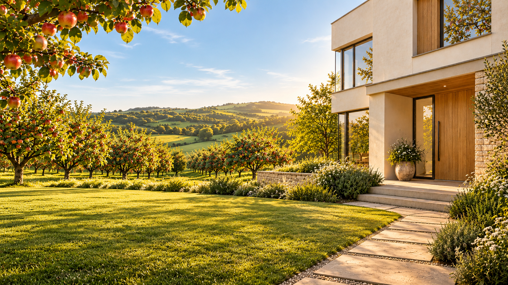
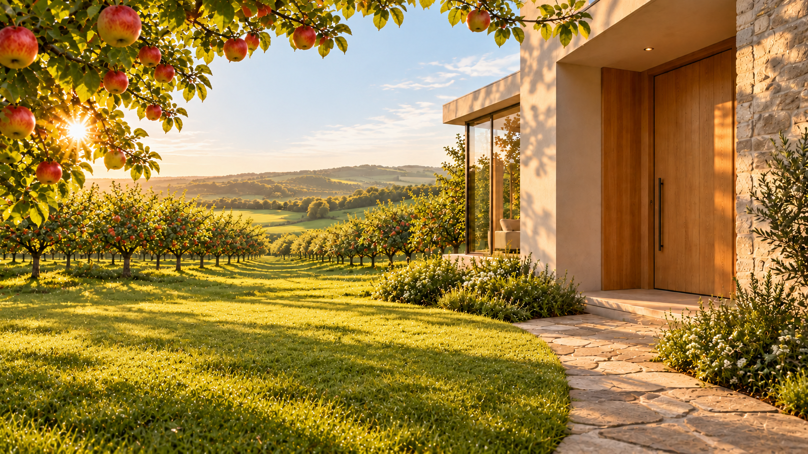
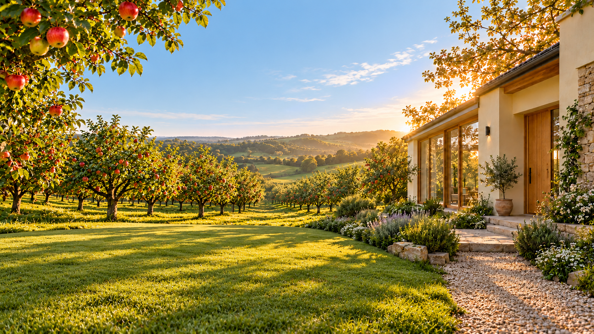

Home exterior — three arrival compositions
27 October 2026 · Current versions reserve space for the welcome and Home cards; apples remain visible.
UNACCEPTED CONCEPTS. These images explore Colin's idea of seeing the house from its front garden, with the house on the right and orchard opening to the left. The top leaves open sky for a small welcome/date; the lower-left foreground is calm enough for three compact cards. No interface is painted into the image. The current Home visual direction remains the generous orchard view through an architectural opening. These concepts do not amend it or approve production use; that would require a separate Home Owner/governance review.

A · Path to the door
Open sky for the welcome; a clear lower-left area for cards; path stays visible at right.

B · Sheltered entry
Closer doorway with the same two reserved UI zones.

C · Wide garden
Broadest orchard view, with a calm lower-left card zone and unobstructed entrance.